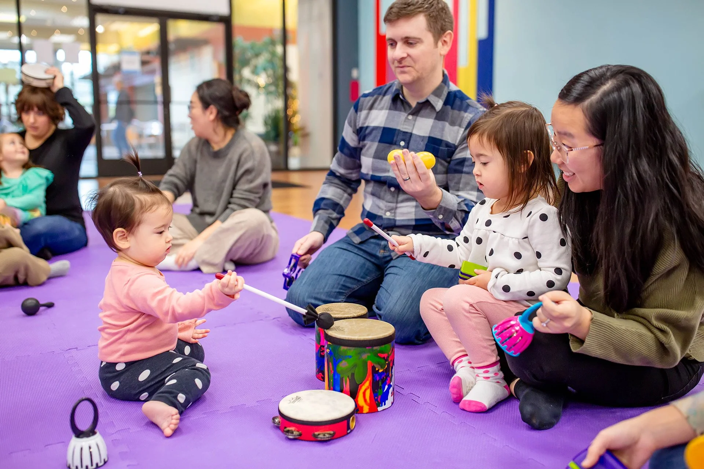
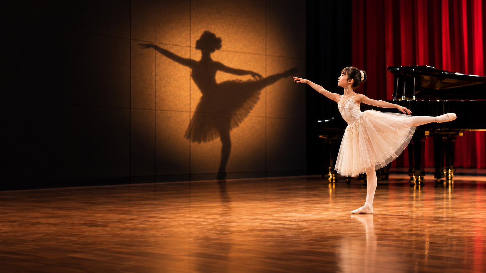
OC MUSIC & DANCE · IRVINE, CA
IT ALL
STARTS
HERE
Music and dance education
for every stage of life.
A first class. A deeper understanding. A lifelong passion.↓
Find your stage
Bringing music and dance within reach.
Financial assistance available
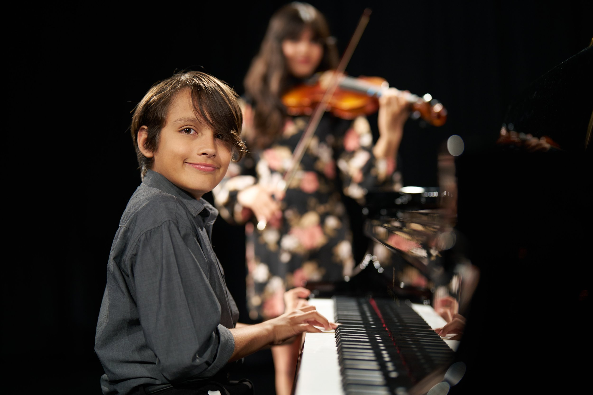
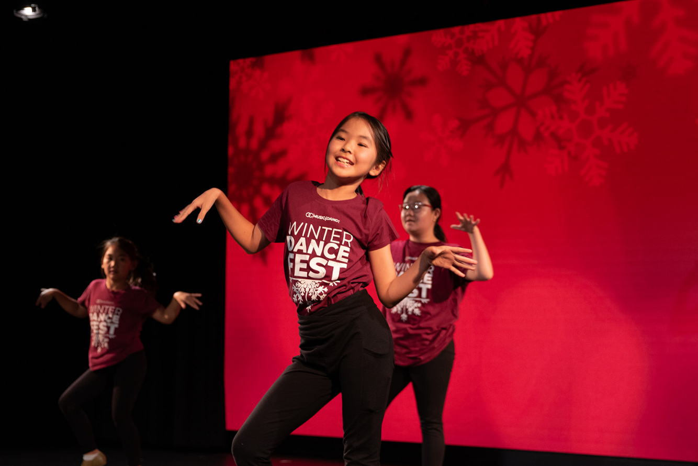
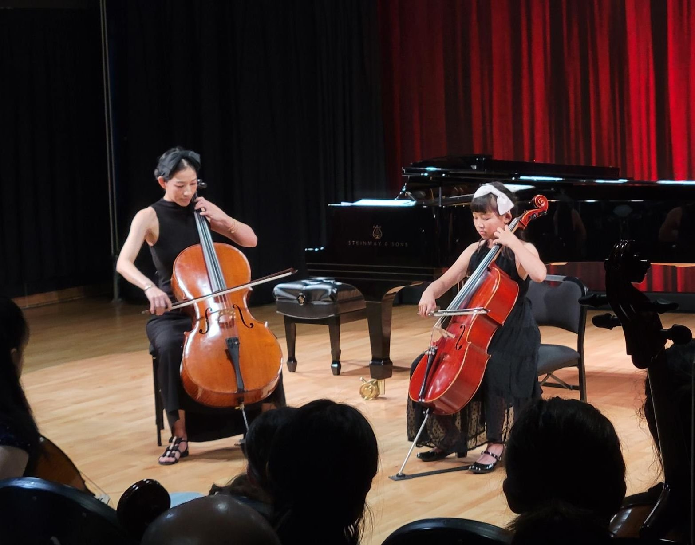
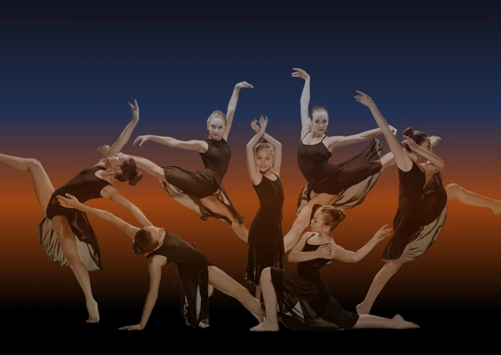
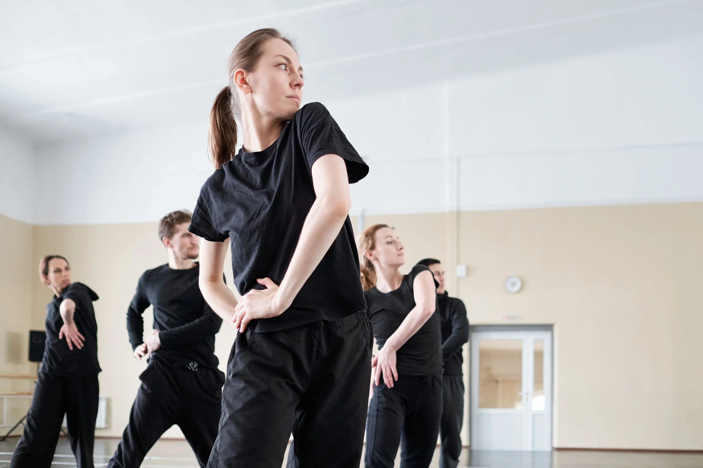
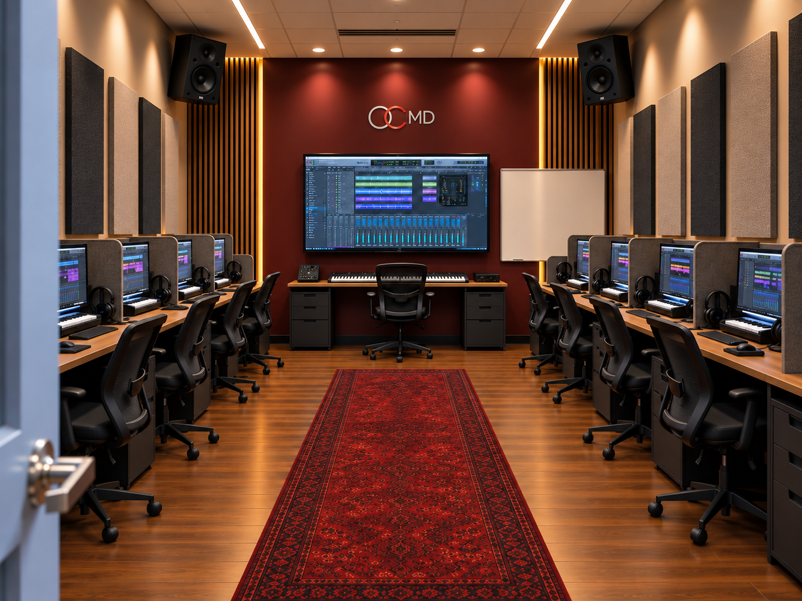
A LOOK AHEAD · PLANNED RECORDING SPACERECORDING SERVICES
Your next project starts here.
Capture an audition. Record a recital. Bring a creative project to life with professional audio and video production.
- Audition recordings
- Recital recordings
- Audio & video production
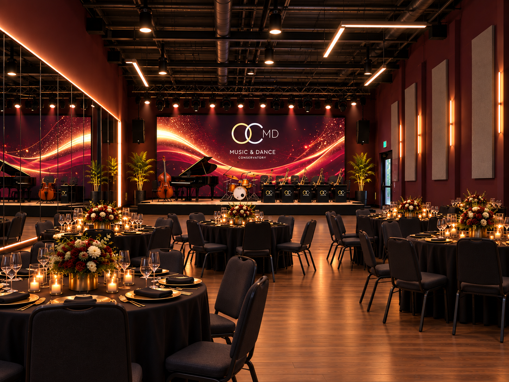
A PREVIEW OF OUR NEW SPACE
Come see
for yourself.
Meet the people. Feel the energy.
Picture yourself here.
MAKE A DATE WITH POSSIBILITY
See what’s next.
Illustrative events & dates for this concept.
NOV25Open houseStep inside OCMD
Explore the spaces, meet the team, and find out where your interests could take you.
Ask about upcoming open houses ↗DEC05Studio tourGet a feel for the place
Take a closer look at the studios and ask questions about programs that interest you.
Plan your visit ↗DEC12Student performanceSee possibility in action
Experience the practice, creativity, and commitment coming together on stage.
Ask about upcoming performances ↗START WITH A FIRST EXPERIENCE
Your first class could be your next step.
THE PEOPLE BEHIND THE PROGRESS
Who you learn
from matters.
Meet the artists who help you find your voice.
Explore OCMD’s faculty and find the experience and discipline that fit your interests.
Meet our faculty ↗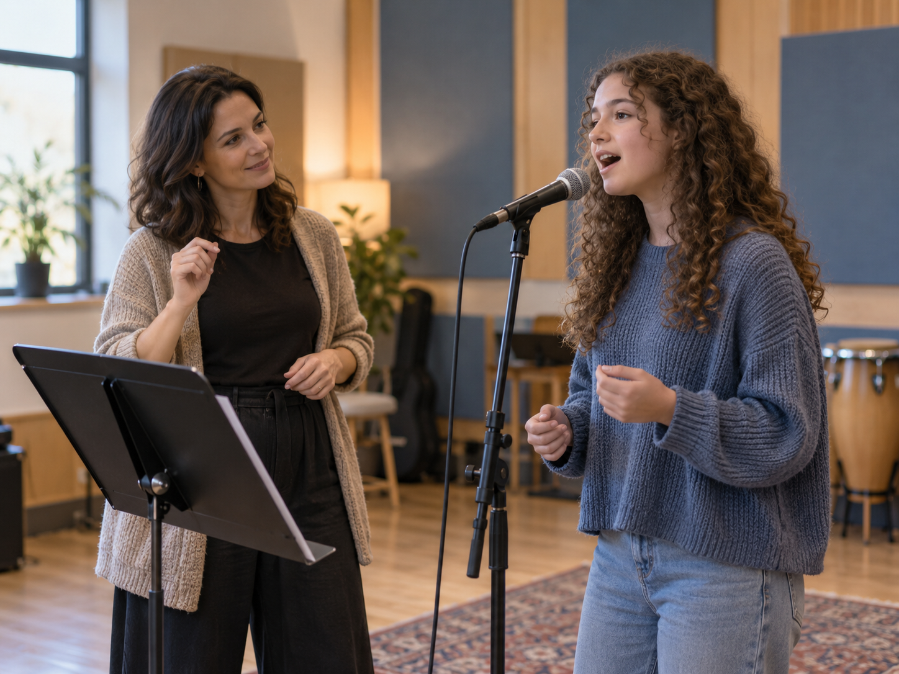
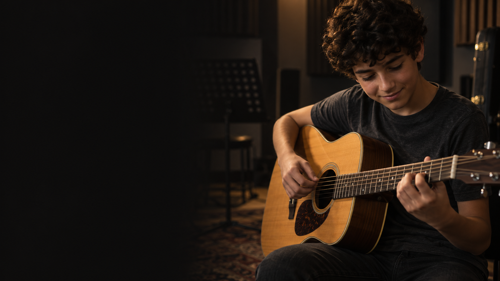
POSSIBILITY SHOULD HAVE ROOM TO GROW
Help the next
chapter happen.
Support OCMD’s nonprofit mission.
Make a place for more people to discover the arts.
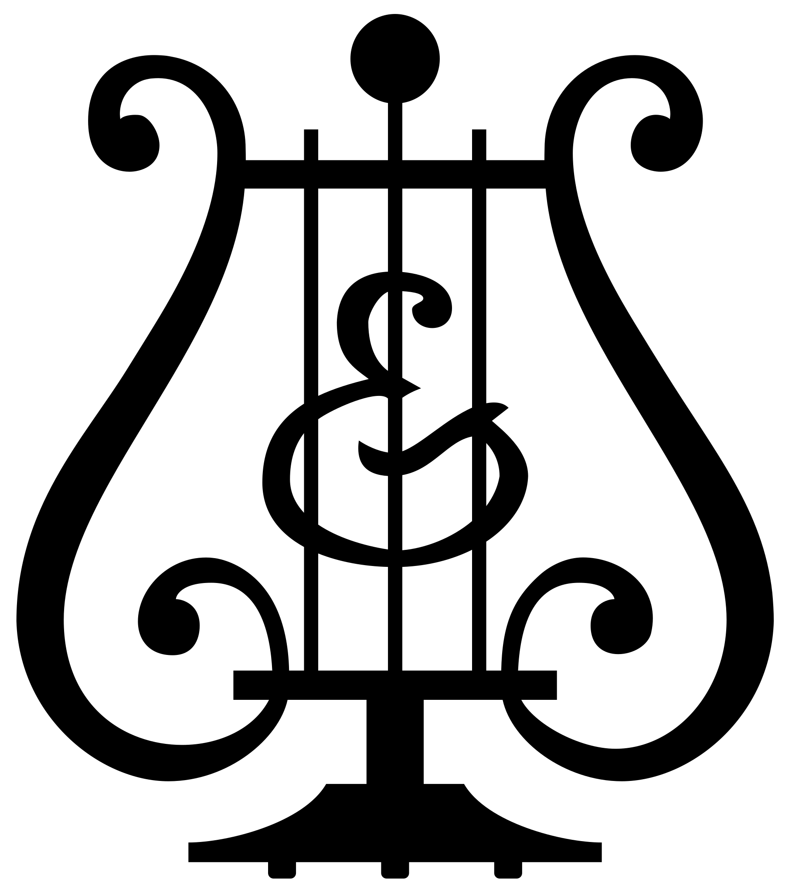
Steinway Select School
THE COMMUNITY BELIEVES IN OUR VISION
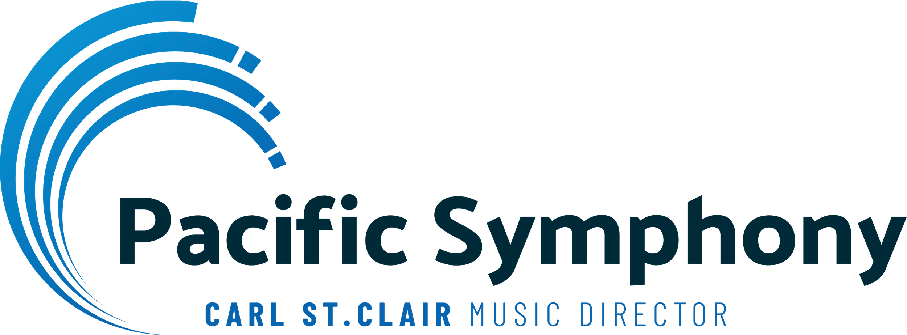
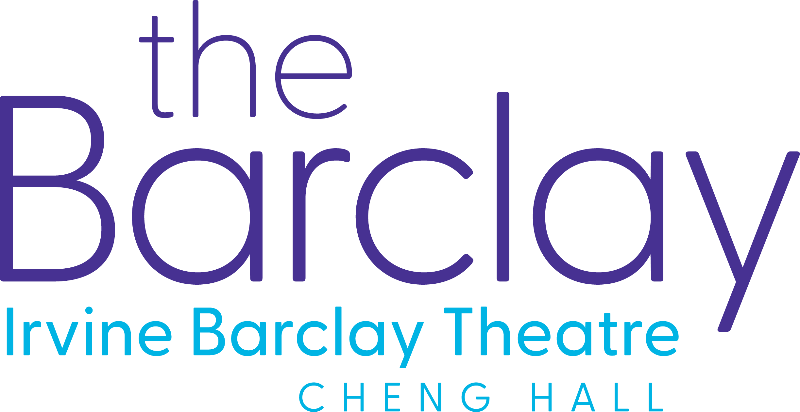
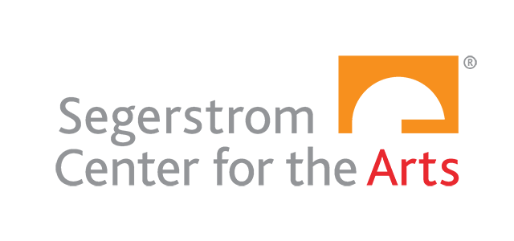
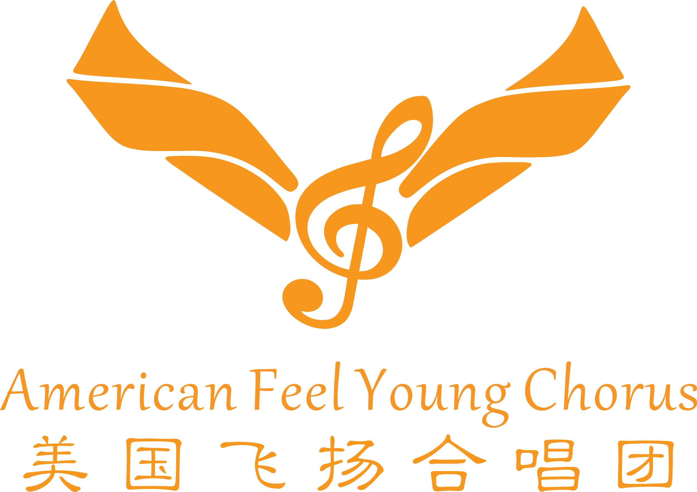